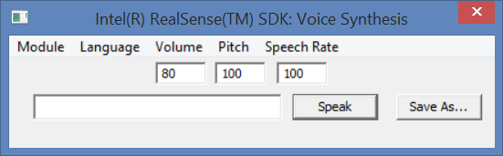

|
The FF_SpeechSynthesis and FF_SpeechSynthesis.cs samples show how to use the voice synthesis interface for text to speech translation, in C++ and C# respectively.

Figure 152: Voice Synthesis Sample Screen Shot
The screen shot is as shown in Figure 152.
| • | Use the Module menu to select a synthesis module. |
| • | Use the Language menu to select a language setting. |
| • | Change the volume, pitch, or speech rate using the corresponding Edit Box. |
| • | Enter the sentence to be synthesized. |
| • | Click the Speak button. The synthesized speech will be played back on the default audio device. |
| • | Click the Save As button to save the synthesized speech to a wave file. (The C# sample does not have this button.) |
|